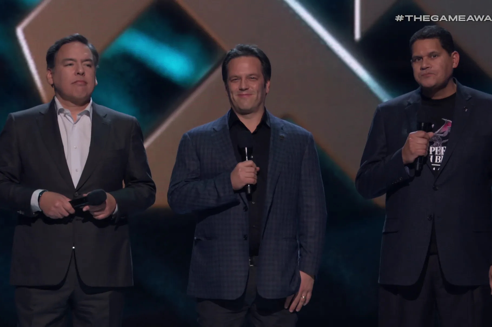

The Game Awards
The Game Awards is an annual awards ceremony that honors achievements in the video game industry. Established in 2014, the show is produced and hosted by game journalist Geoff Keighley, who previously worked on its predecessor, the Spike Video Game Awards.
Key points about The Game Awards:
- Recognizes outstanding creative and technical accomplishments in video games.
- Features premieres of upcoming games and new information on previously-announced titles.
- Held in the Peacock Theater in Los Angeles, California.
- Selected nominees are determined by an international jury of over 100 global media and influencer outlets.
- Winners are decided by a blended vote between the voting jury (90%) and public fan voting (10%).
The Game Awards stage in 2021.

Host Geoff Keighley onstage at the 2017 game awards.
PlayStation’s Shawn Layden, Xbox’s Phil Spencer, and Nintendo’s Reggie Fils-Aime share the stage at the 2018 Game Awards in Los Angeles
For more information, visit the official website: The Game Awards.